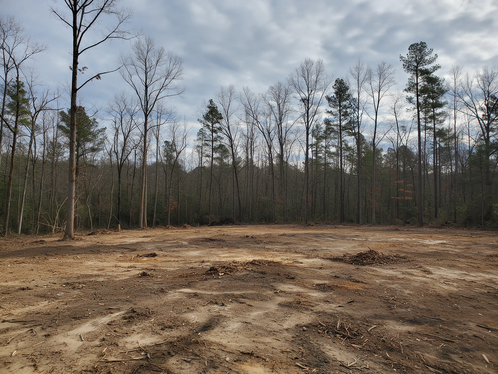

Land Clearing in Mint Hill, NC
Mint Hill still feels like the country, with bigger lots, long gravel drives, and wooded acreage just past I-485. We clear home sites, driveways, pasture, and back acreage across town, from the neighborhoods off Lawyers Road to the open tracts along Fairview Road and down toward the Union County line.
- Firm written pricing
- Phased acreage clearing
- Creek-buffer aware
Free Mint Hill Land Clearing Estimate
Tell us about your property. We'll call within one business day to schedule a walk-through.
Thanks, we've got it.
We'll review your property details and call you within one business day to schedule your walk-through.
- Owner on Every JobThe person who quotes it runs it
- Licensed & InsuredCertificates provided on request
- Free On-Site EstimatesFirm written scope, no surprises
- Built for AcreagePhased clearing on larger lots
What Our Land Clearing Process Is in Mint Hill
Bigger Mint Hill properties take a bit more planning. Here's how we keep the job simple.
-
01
Walk the Property
Boundaries, creeks, low spots, access for equipment, and what you want open.
-
02
Plan the Phases
Drive and house site first, then yard or pasture, priced in writing.
-
03
Clear
Tracked machines, buffers respected, soil left stable.
-
04
Hand-Off
Walk the result together and line up the next phase.
Where We Serve Near Mint Hill
Mint Hill is right in our regular work area. We also clear land across Charlotte and these nearby towns.
Clearing Land in Mint Hill the Right Way
Larger Lots, Different Jobs
Compared to most of Mecklenburg County, Mint Hill lots run big. It's common to see one to five acres with a house set well back from the road. That changes the work: more driveway to clear, more decisions about how much woods to keep, and more ground to protect. We help you figure out how open you want the property and clear it in a way that leaves the privacy and shade you moved out here for.
Long Driveways & Back-Lot Home Sites
Many Mint Hill properties need a long drive cut through the trees before anything else can happen. We clear the drive corridor wide enough for construction traffic and future utility lines, then open the home site at the end of it. Off roads like Blair Road (NC 51), Idlewild Road, and Fairview Road, that often means working around old fence lines, gullies, and big hardwoods worth keeping.
Pasture, Horse Property & Hobby Farms
Mint Hill still has small farms and horse properties, and many of them have fields that have been creeping back into woods for years. We can push that tree line back, clear old fence rows, and open up grazing ground, leaving the material mulched so it breaks down into the soil instead of piling up.
Goose Creek & Stream Buffers
Parts of Mint Hill drain to Goose Creek, a watershed with stricter stream buffer protections because of the rare aquatic species it supports. Other creeks in town are covered by Mecklenburg County's stream buffer rules. If your property has a creek or wet-weather stream, we'll identify it during the walk-through, keep our clearing out of the buffer, and recommend confirming the buffer width with the Town of Mint Hill or the county before work starts.
Town Approvals & the One-Acre Rule
Mint Hill has its own planning and zoning department, and North Carolina requires an erosion and sedimentation control plan for most land disturbance over one acre, which comes up more often here because of the lot sizes. We'll tell you if your project looks like it's approaching that threshold, but confirm the requirements with the Town of Mint Hill for your property.

Got acreage in Mint Hill?
Tell us how much you want opened up. We'll help you plan phases that fit your budget.
Start My EstimateOther Services We Provide in Mint Hill
Every service we offer in Mint Hill, grouped by category. Each group starts with its main service, followed by its specialty services.
Why Mint Hill Property Owners Choose Us
Straight Talk From the Owner
You'll get an honest read on what your acreage needs, not an upsell.
Phased to Fit Your Budget
Clear what you need now and come back for the rest when you're ready, all priced up front.
Respect for the Creeks
We know Goose Creek and county buffers matter here, and we keep our machines out of them.
People choose Mint Hill for room to breathe. We clear land here with that in mind, opening up what you need for the house, the drive, or the pasture while keeping the woods that make the property feel like home.
Mint Hill Land Clearing FAQs
Does my Mint Hill property fall in the Goose Creek watershed?
Parts of Mint Hill drain to Goose Creek, which has stricter stream buffer rules. The Town of Mint Hill or Mecklenburg County can confirm whether your parcel is in the watershed and what buffer applies.
Do I need a permit to clear a few acres in Mint Hill?
Disturbing more than one acre generally requires an erosion and sedimentation control plan, and the Town may have its own requirements. Check with the Town of Mint Hill planning department before clearing.
Can you clear a long driveway through the woods?
Yes. Driveway corridors are one of our most common Mint Hill jobs. We clear wide enough for construction trucks and future utilities and leave the edges clean.
Can I clear my land in phases?
Absolutely. We often clear the drive and home site first, then come back later for yard, pasture, or trails. Each phase is priced in writing.
Can you reclaim an old pasture that's grown up in trees?
Yes. We push back the tree line, clear fence rows, and mulch saplings so the ground can be seeded or grazed again.
Do you work on properties near the Union County line?
Yes. We regularly work on both sides of the line, including properties that technically sit in Union County with a Mint Hill or Matthews address.
What happens to all the trees on a big lot?
On most Mint Hill jobs, we mulch material in place, which avoids large haul-off bills. If you need a bare site for construction, removal is built into your written scope.
How much does land clearing cost in Mint Hill?
It depends on acreage, density, tree size, terrain, and finish. Because Mint Hill lots tend to be larger, we walk the property first and give a firm written price for each phase.
Ready to clear your Mint Hill property?
Free on-site walk-through and a firm written price.